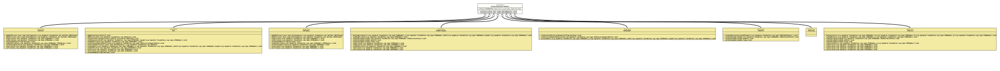

Interface AllowsStyleAttributes
- All Known Subinterfaces:
SVG, SVGGroup, SVGLine, SVGPath, SVGRectangle, SVGSymbol, SVGText, SVGTSpan
- All Known Implementing Classes:
SVGElementAdapter, SVGGenericElement, SVGGroupImpl, SVGImpl, SVGLineImpl, SVGPathImpl, SVGRectangleImpl, SVGSymbolImpl, SVGTextImpl, SVGTSpanImpl
@ClassVersion(sourceVersion="$Id: AllowsStyleAttributes.java 1074 2023-10-02 12:05:06Z tquadrat $")
@API(status=STABLE,
since="0.0.5")
public sealed interface AllowsStyleAttributes
permits SVG, SVGGroup, SVGLine, SVGPath, SVGRectangle, SVGSymbol, SVGTSpan, SVGText
{kind=link}
- Author:
- Thomas Thrien (thomas.thrien@tquadrat.org)
- Version:
- $Id: AllowsStyleAttributes.java 1074 2023-10-02 12:05:06Z tquadrat $
- Since:
- 0.0.5
- UML Diagram
-

UML Diagram for "org.tquadrat.foundation.svg.AllowsStyleAttributes"
{kind=link}
-
Field Summary
Fields -
Method Summary
Modifier and TypeMethodDescriptionvoidsetClass(CharSequence value) Sets the CSS class for the SVG element.voidsetStyle(CharSequence value) Sets the CSS style for the SVG element.
-
Field Details
-
STYLE_ATTRIBUTES
The core attributes.
-
-
Method Details
-
setClass
Sets the CSS class for the SVG element.- Parameters:
value- The name of a CSS class for this SVG element.
-
setStyle
Sets the CSS style for the SVG element.- Parameters:
value- A CSS style definition.
-
{kind=link}
{kind=link}
{kind=link}